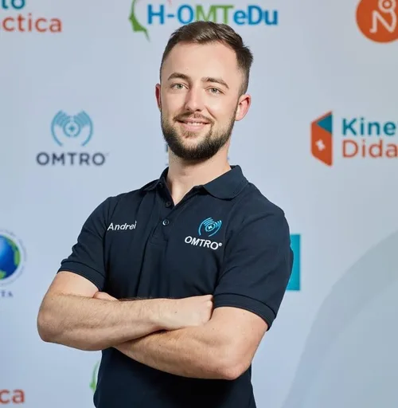

Manipulări și Mobilizări Articulare
Chiropractica și terapia manuală ortopedică constau în manipularea precisă a articulațiilor coloanei vertebrale pentru detensionare și îmbunătățirea reflexelor neuromusculare.
Vezi detalii procedură →Andrei Țolaș — Kinetoterapeut cu peste 10 ani de experiență în recuperarea pacienților. Aduc tratamente avansate de kinetoterapie, fizioterapie și terapie manuală în confortul casei tale.

Beneficiile recuperării la domiciliu cu un specialist echipat complet.
Uită de disconfortul deplasării prin trafic. Mă deplasez direct la tine acasă în Oradea, asigurându-ți un tratament în siguranța propriului cămin.
Programările se stabilesc de comun acord în funcție de disponibilitatea ta, facilitând continuitatea tratamentului fără întreruperi.
Peste 10 ani de activitate practică în recuperare balneară (Băile 1 Mai) și sute de pacienți ajutați cu succes la domiciliu.
Aduc la tine acasă 5 aparate profesionale de fizioterapie, pat pliant confortabil și materiale de kinetoterapie de nivel clinic.
Fiecare ședință beneficiază de suport legal, oferind contract de servicii și facturare fiscală completă pentru decontare.
Tarife corecte raportate la deplasare, echipamentele folosite și timpul alocat exclusiv recuperării tale, plus reduceri la pachete.
O abordare complexă și adaptată pentru reducerea durerilor și recăpătarea mobilității.
Chiropractica și terapia manuală ortopedică constau în manipularea precisă a articulațiilor coloanei vertebrale pentru detensionare și îmbunătățirea reflexelor neuromusculare.
Vezi detalii procedură →Tratamente avansate (drenaj limfatic, laserterapie, ultrasunet, electrostimulare Compex, Theragun și ventuze) pentru biostimulare, reducerea inflamațiilor și calmarea durerilor.
Vezi detalii procedură →Gimnastică medicală ghidată și exerciții fizice personalizate axate pe recuperarea post-traumatică, post-operatorie, ameliorarea herniilor de disc și corectarea posturii.
Vezi detalii procedură →Proceduri personalizate de masaj tailandez de stretching, masaj profund al țesuturilor (deep tissue), masaj anticelulitic, reflexoterapie și masaj suedez de relaxare.
Vezi detalii procedură →În parteneriat cu Îngrijiri Socio Umane La Domiciliu, oferim o gamă largă de servicii de asistență dedicată și îngrijiri specifice pentru seniori.
Vezi detalii partener →Opinia celor care și-au redobândit mobilitatea și istoricul unor recuperări deosebite la domiciliu.
"Andrei a dat dovadă de un profesionalism desăvârșit. După operația de menisc îmi era foarte greu să mă deplasez la cabinet. Faptul că a venit acasă cu toate aparatele de fizioterapie a făcut diferența."
"Recomand cu căldură ședințele de terapie manuală și chiropractică. Aveam dureri crunte de spate de la statul la birou și rigiditate cervicală. După primele 3 ședințe mă simt ca nou."
"Un kinetoterapeut răbdător și foarte bine pregătit. Lucrează cu tatăl meu în vârstă pentru recuperare după un accident vascular. Am observat progrese uimitoare în mobilitatea lui."
Cum decurge un plan de tratament individualizat și rezultatele obținute.
Află mai multe despre pregătirea mea profesională, afecțiunile tratate și tarifele ședințelor.
Bună! Sunt Andrei, de profesie fiziokinetoterapeut.
În urma experienței și cunoștințelor acumulate în cei zece ani de muncă în Băile 1 Mai și alături de pacienți la domiciliu, am observat importanța recuperării medicale cât mai timpurii și incapacitatea multor persoane de a se deplasa înspre cabinetele de recuperare.
Astfel m-am specializat în oferirea de tratamente de recuperare direct la domiciliul pacienților mei. Această abordare îmi permite să vă aduc servicii personalizate și de calitate la ușa fiecarei persoane care are nevoie de îngrijire și recuperare.
Cu scopul de a vă asigura cele mai bune rezultate, am echipat cabinetul meu mobil cu cinci aparate de fizioterapie, pat de masaj și toate uneltele necesare pentru a realiza o ședință de kinetoterapie eficientă, asemenea celor din centrele de recuperare clasice.
Ceea ce urmăresc cu abordarea mea empatică și prietenoasă, cât și cu cunoștințele solide de vârf, este să înțeleg nevoile fiecăruia și să creez un plan de tratament individualizat, adaptat la condiția și obiectivele dumneavoastră.
Absolvent al Facultății de Educație Fizică și Sport, specializarea Kinetoterapie, în cadrul Universității din Oradea. Mă perfecționez continuu pentru a aplica cele mai sigure și moderne tehnici de recuperare:
I. OMTRO (Orthopaedic Manual Physical Therapy Romania) - program de specializare pe 2 ani (15 module) înregistrat în cadrul IFOMPT (Federația Internațională de Terapie Manuală Ortopedică pentru Fizioterapeuți):
Alte cursuri de specializare absolvite:
Abordez cu profesionalism o gamă largă de patologii pentru redobândirea calității vieții:
Prețul unei ședințe de recuperare la domiciliu este personalizat și se stabilește în funcție de:
🎁 Ofertă specială: La achiziționarea unui pachet de 10 ședințe de recuperare, beneficiezi de un discount de 10% din tariful total!
Stabilește o ședință de evaluare la domiciliu
Strada Ciheiului 46c1, Oradea